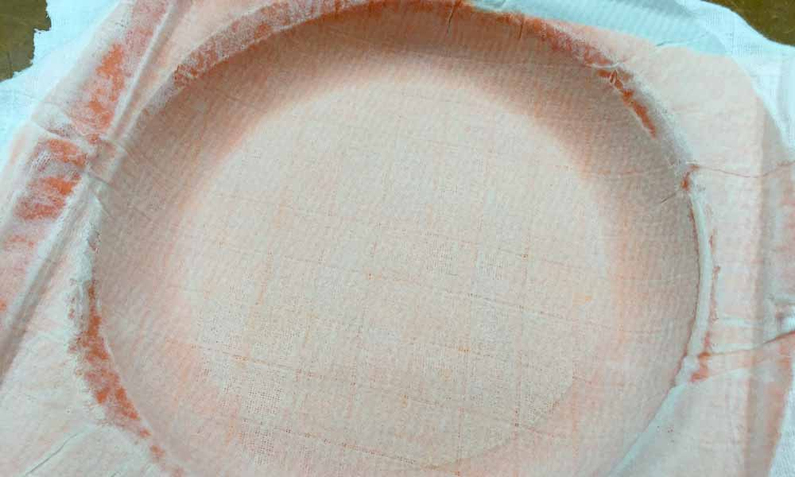

Exercise 14 Composites
Requirement
- design and make a 3D mold (~ft2)
- produce a fiber composite part in it
Introduction
Composites are combinations of two materials in which one of the material is called the reinforcing phase, is in the form of fibers, sheets, or particles, and is embedded in the other material called the matrix phase. The advantages of composites are: weight ratio, tensile strength, toughness, better performance, fatigue resistance and design flexibility.
The requirement is to build something that is at least one square foot big. I decided to make a frisbee after checking out some of the following past projects for inspirations.
Materials & Methods
The material I have chosen to use as my positive mold is a blue modelling foam as it is lightweight and strong to withstand the compaction of air pressure subsequently in the vacuum bagging process. As for the composite materials, I will be using natural fibre, namely cotton and felt. The method used is vacuum bagging. Vacuum bagging (or vacuum bag laminating) is a clamping method that uses atmospheric pressure to hold the adhesive or resin-coated components of a lamination in place until the adhesive cures. This process requires a vacuum pump and epoxy resin. The following is a list of some of the technical terms associated with this process.
- Bleeder: A nonstructural layer of material used in the manufacturing of composite parts to allow the escape of excess gas and resin during cure. The bleeder material is removed after the curing process is completed and the excess resin taken with it.
- Breather: A loosely woven or nonwoven material that acts as a continuous vacuum path over a part but does not come in contact with the resin.
- Mold Release Agent: A material applied to mold surfaces to facilitate the release of the molded article. Liquid, paste, spray and solid release materials are all common in composite fabrication.
- Peel Ply or Release Fabric: A sacrificial nylon, polyester or non-porous Teflon ply that is placed over the outer plies of a laminate during lay-up. When the resin has cured the peel ply is removed. The results are a smooth surface that is easily prepared for subsequent bonding or painting.
- Perforated Release Film: A solid release film that has been perforated with a uniform hole pattern comprised of usually 0.015” or 0.045”. Hole spacing ranges from 0.25” to 8” spacing. The effect is to restrict the amount of resin bleed that is able to pass through the film.
- Solid Film: A barrier between the bleeder and breather layer to prevent the excess resin absorbed into the bleeder from soaking into the breather. The solid film is sized smaller than the bleeder and breather to allow an air path connecting both.
- Tool: A structure, also referred to as a mold, that provides a specific size and shape in or over which a lay-up is formed, shaped and cured.
- Vacuum Bagging Film: An airtight flexible sheet placed over a lay-up and sealed along its edges. The bag is fitted with vacuum ports and connected to a vacuum source. During the cure the bag is evacuated and the lay-up is compacted under atmospheric or autoclave pressure. Vacuum is applied to the bag during the entire cure cycle.
- Vacuum Port: A machined or cast metal fitting that connects the vacuum bag to the vacuum source. The vacuum source can be a vacuum pump or a compressed air venturi. The port is connected to the vacuum source with a reinforced hose. Both the hoses and ports typically incorporate fittings that allow the hoses to be removed without losing the vacuum.
- Vacuum Sealant Tape: A thick rubber based adhesive tape that is sticky on sides and used to form a seal between the vacuum bag and the tool surface. It has the ability to remain soft and pliable at temperatures in excess of 350ºF.
Steps involved
- Design the positive mold using Autodesk Inventor. Convert to STL file, and import to Mastercam.
- Set the necessary toolpath and convert to G code. Then mill the design with the SK2030 CNC router. Detailed steps on milling are documented here.
- Fix the mold to a base plate.
- Apply release wax to the entire mold.
- Prepare epoxy mix: Epoxy resin to hardener proportion used in our lab is 10 parts epoxy to 6 parts hardener. I have used 135g of Epoxy with 85g of hardener.
- 1st layer: Peel Ply. Wet with epoxy mix.
- 2nd layer: cotton fabric. Wet with epoxy mix.
- 3rd layer: felt. Wet with epoxy mix.
- 4th layer: another release fabric. Wet with epoxy mix.
- 5th layer: Bleeder (white woolen material)
- 6th layer: flow media (blue netting)
- Outermost layer: Vacuum bagging film
- Before sealing the vacuum bag with sealant taping, secure the air tubing to one corner of the bag for extraction of air within the bag.
- Turn on vacuum pump to remove air. Check sealant taping to ensure no leaking holes that air might escape.
- Leave the vacuum pump on for the next 6-7 hours for the epoxy to cure.
Milling process
I designed the frisbee using Inventor, then import to Mastercam to create the toolpath. Subsequently, the file needs to be converted to g-code that the CNC router can understand.
Vacuum Bagging process


Reflections
It would not have been possible to complete this week's assignment without my course mate, Tham for lending his pair of helping hands in much of the processes. I am also grateful for the Composite Technology Laboratory located in Workshop 14 in Singapore Polytechnic for allowing us to use the lab and the resources for this week's project.
Download Week 14 work files
References
- Layup Process
- Composites wet layup
- How To Make Your Own Carbon Fiber (Fibre) Parts.
- How to make a mould for a carbon fiber (fibre) part
- Vacuum Bag Terms
- Vacuum Bagging Techniques